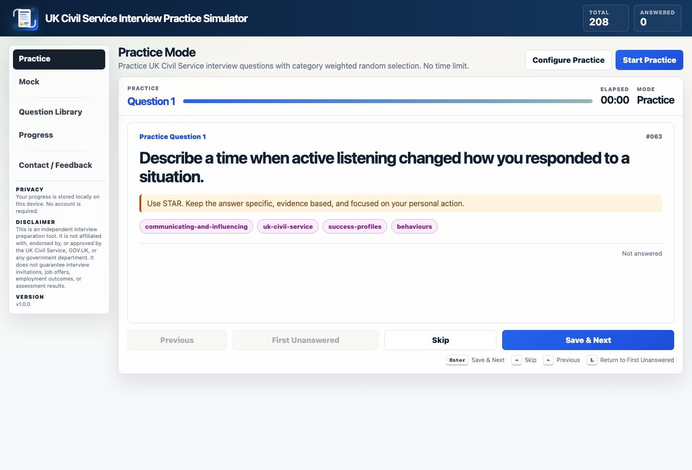
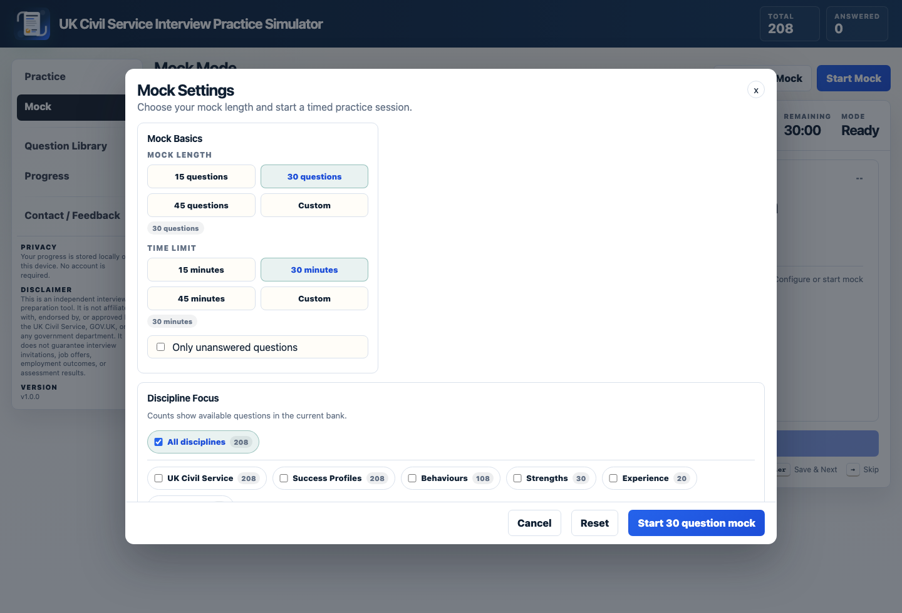
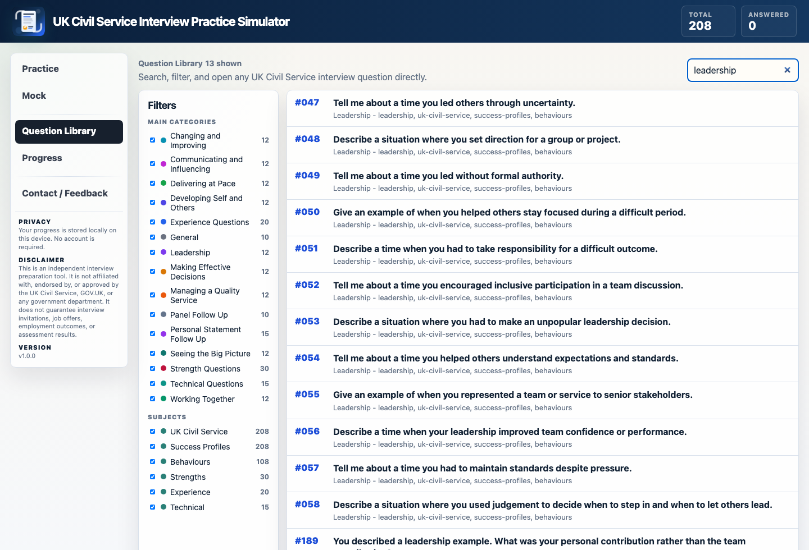
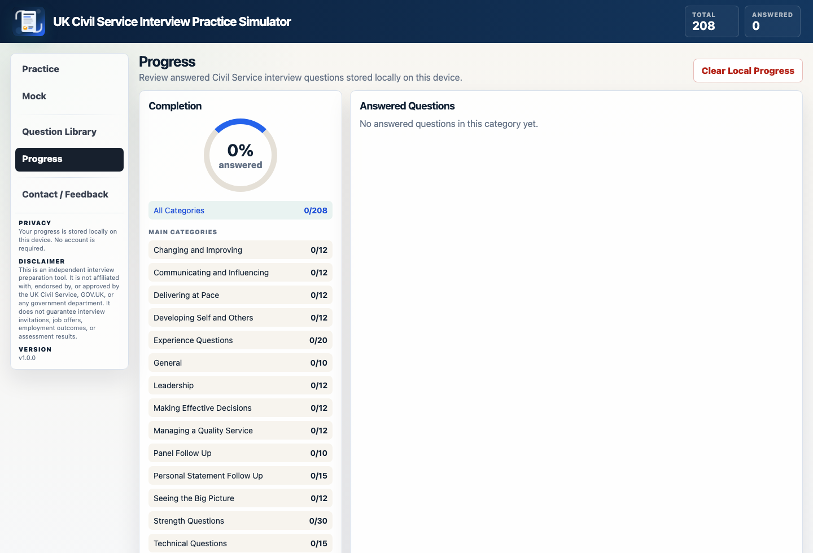

208 prompts
The full version covers behaviours, strengths, experience, technical questions, personal statement follow ups, and panel probes.
Built for candidates who want to rehearse behaviours, strengths, experience, technical questions, personal statement follow ups, and panel style prompts before interview day.
View ProductThe full version covers behaviours, strengths, experience, technical questions, personal statement follow ups, and panel probes.
Use structured answer guidance to keep examples focused on personal action, judgement, outcome, and role relevance.
Run timed interview sessions with a structured question queue and category-focused practice.
Search and revisit weaker categories before interview day, from Delivering at Pace to Strength Questions.
These screenshots show the configured UK Civil Service app experience, including practice, mock configuration, question library, and local progress review.




The landing page includes a free 10 question sample. The full product expands this into a 208 question Civil Service interview practice set.
Key details about the UK Civil Service Interview Simulator configuration.
It is built for candidates preparing for UK Civil Service recruitment interviews using the Success Profiles framework.
The full product covers behaviours, strengths, experience, technical prompts, personal statement follow ups, panel follow ups, and general motivation questions.
Use STAR, but keep the emphasis on your personal action, judgement, result, learning, and relevance to the role.
No. It is an independent preparation product and is not affiliated with, endorsed by, or approved by the UK Civil Service, GOV.UK, or any government department.